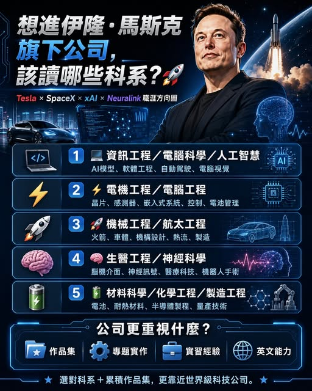

《看懂制度，選對世界》第一集
Elon Musk 旗下公司需要哪些科系的人才？
隨著今天 IPO， 深受關注的問題是：「大學該選哪個科系？」 涵蓋電動車、火箭、人工智慧、人形機器人與腦機介面。想進入這些科技企業，除了科系選擇，工程實作、作品集、英文溝通與跨領域合作同樣重要。

【伊隆・ 旗下公司，需要哪些科系的人才？】 隨著今天 IPO， 深受關注的問題是：「大學該選哪個科系？」 涵蓋電動車、火箭、人工智慧、人形機器人與腦機介面。想進入這些科技企業，除了科系選擇，工程實作、作品集、英文溝通與跨領域合作同樣重要。. 第一條路： 喜歡寫程式、AI 模型、自動駕駛與機器人軟體，可優先考慮資工、電腦科學或人工智慧。
適合方向： xAI：AI 模型、軟體工程、超級運算 Tesla：自動駕駛、Optimus、電腦視覺 SpaceX：飛行軟體、衛星系統、模擬程式 . 第二條路： 電機與電腦工程連結晶片、感測器、馬達、電池、控制系統與嵌入式軟體，適用於電動車、火箭、AI 伺服器、機器人與腦機介面。大學期間可學習： 電路與 PCB 設計 嵌入式系統與韌體 半導體與晶片設計 控制工程與訊號處理 電力電子與電池管理 . 第三條路： 喜歡火箭、汽車、機構、熱流與製造，可選擇機械或航太工程。
SpaceX 需要空氣動力、機械設計、結構及製造人才；Tesla Optimus 團隊也結合機械、控制、自動化與智慧製造。建議累積： CAD 與 3D 建模 熱力學與流體力學 有限元素分析 火箭、無人機或賽車專題 . 第四條路： 對大腦、神經訊號、醫療器材與機器人手術有興趣，可朝 Neuralink 類型的腦機介面企業發展。適合科系： 生醫工程 神經科學 電機工程 電腦工程 機器人工程 生物資訊 . 第五條路： 電池壽命、火箭耐熱材料、晶片製程、車體輕量化與量產技術，都需要材料、化工與製造人才。
適合投入電池研究、複合材料、金屬加工、半導體製程及自動化設備。喜歡 AI 與程式：資工、電腦科學、人工智慧 喜歡晶片與控制：電機工程、電腦工程 喜歡火箭與機構：機械工程、航太工程 喜歡電池與材料：材料科學、化學工程 喜歡腦科學與醫療：生醫工程、神經科學 大學期間可累積： GitHub 程式作品 AI、機器人、火箭或無人機專題 Formula Student 學生方程式賽車 實驗室研究與企業實習 技術競賽、論文或發明成果 英文簡報與技術文件能力 科系提供專業基礎，作品集則能證明你具備完成工程任務的能力。